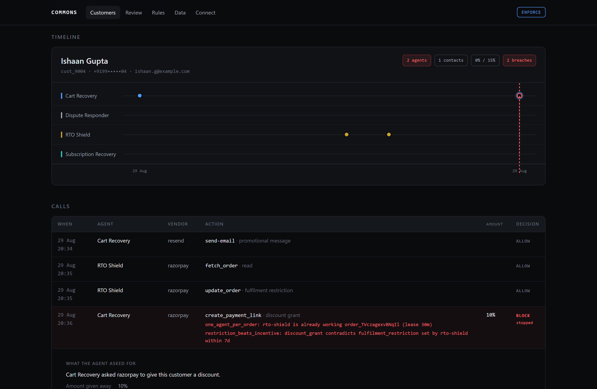
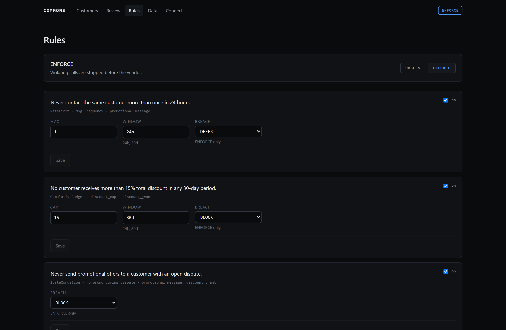

Every agent was right.The merchant was wrong.
Agent platforms scope permissions to the agent. Commons scopes limits to the customer being acted upon.

Nobody exceeded their own limit.
Each agent has its own ceiling and stays under it. No permission system is watching the one thing that accumulates, which is the person on the other end.
Subscription Recovery
Cart Recovery offers 10% off to rescue an abandoned basket. Subscription Recovery, working the same person's failed mandate, offers 8% to keep them. Each is well inside its own ceiling. The customer is now holding 18% against a 15% cap.
Cart Recovery
RTO Shield decides a customer is a return risk and locks their order to prepaid. Cart Recovery, an hour into its own cycle, offers that same customer 10% off to buy. The merchant is arguing with itself, and neither agent can see it.
Five questions a single call cannot answer.
Each one needs history and aggregation across every agent, which is exactly why per-agent validation cannot express them.
Does this undo what another agent just did?
A fulfilment restriction and a discount incentive on the same customer is not a limit breach. Nobody exceeded anything. It is the merchant working against itself, and no per-agent control can see it.
How many times has this happened to them in a window?
How much have they been given in total?
Is this allowed given their current state?
Is another agent already working this order?
The agent gets a tool error, not a log line.
Violating calls are stopped before they reach the vendor. These are verbatim refusals from one run of four agents against live Razorpay and Resend servers.
The limits are yours, in your words.
Every rule carries the sentence you wrote beside the invariant that is actually enforced, so you can check that the two still agree. Edit a threshold and it applies on the next call. Your agents stay connected.

One line, in a config file you already own.
- "razorpay": { "url": "https://mcp.razorpay.com/mcp" } + "razorpay": { "url": "http://127.0.0.1:8787/mcp/cart-recovery/razorpay" }
Nothing inside the agent changes. That is why this works for agents you did not write and cannot modify.
# what a vendor tool means, and to whom create_payment_link: action_class: discount_grant entity: { from: args, path: customer_contact } magnitude: { from: args, path: notes.discount_pct } resource: { from: args, path: notes.order_id }
Written from the schemas a vendor already publishes. Never from its source, which is what lets Commons govern a third-party agent calling a third-party vendor.
It runs entirely on your machine.
Commons sees payment amounts, customer identifiers and refund decisions. That is why it is never hosted for you, and why the dashboard is something you clone rather than something you log into.